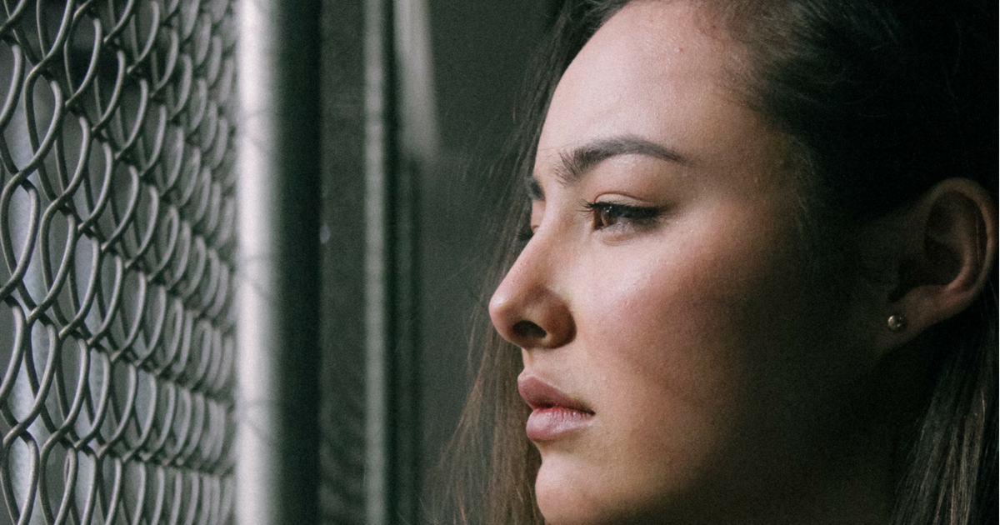

မျက်နှာတစ်ခြမ်းအကြောလိုက်ခြင်း

ဘာလက္ခဏာမှ မပြဘဲ ရုတ်တရက်ကြီး ကိုယ့်မျက်နှာတစ်ခြမ်းက အကြောဆွဲသလိုဖြစ်သွားရင် ဘယ်သူမဆို ကြောက်လန့်မိမှာပါပဲ။ ဘာလို့ မျက်မှာတစ်ခြမ်းတည်း ဒီလိုအကြောလိုက်ရတာလည်း တစ်ချက်လောက်အဖြေရှာကြည့်ရအောင်ပါ။
.
.
.
ကျွန်တော်တို့ ခန္ဓာကိုယ်တစ်ကိုယ်လုံးမှာ သွေးကြောတွေ၊ အာရုံကြောတွေယှက်ဖြာ တည်ရှိနေပါတယ်။ ဒီအထဲက အာရုံကြောတစ်ခုခုရောင်ရမ်းလို့ဖြစ်စေ၊ အကြောင်းတစ်ခုခုကြောင့် ပျက်စီးသွားတဲ့အခါမှာဖြစ်စေ သူထောက်ပံ့ပေးနေရတဲ့ ကြွက်သားက တုန့်ဆိုင်းတာတွေ၊ အကြောလိုက်တာတွေ ဖြစ်လာပါတယ်။ ဦးခေါင်းခွံအထဲက ၇ ချောင်းမြောက် အာရုံကြောက မျက်နှာကြွက်သားတွေကို ထောက်ပံ့ပေးပါတယ်။ ဒီအာရုံကြော ပြဿနာတစ်ခုခု တတ်တဲ့အခါ အခုလိုမျက်နှာမှာ အကြောလိုက်တာတွေ ဖြစ်လာပါတော့တယ်။
စစချင်းတော့ မျက်နှာအကြောလိုက်တာက သိပ်မသိသာတတ်ပါဘူး။ မျက်နှာရဲ့ တစ်နေရာလောက်၊ ပြောရရင် မျက်ခွံလေး၊ ပါးလေး၊ ပါးစပ်နားလေး တစ်နေရာလောက်ပဲ ကွက်ပြီး တွန့်တွန့်သွားတတ်ပါတယ်။ စိတ်တိုစိတ်လှုပ်ရှားတဲ့အခါမျိုး၊ ပင်ပန်းနေတဲ့အချိန်မျိုး ပိုဖြစ်ပါမယ်။ တစ်ခါတစ်လေဆို မျက်လုံးကသူ့ဖာသာပိတ်သွားတာ၊ သူ့အလိုလိုမျက်ရည်တွေ ထွက်လာတာမျိုးတွေပါ ဖြစ်တတ်ပါတယ်။
အချိန်ကြာလာတာနဲ့အမျှ အကြောလိုက်တာကမျက်နှာရဲ့ တခြားနေရာတွေပါ ပျံ့နှံ့သွားပါတော့တယ်။ မျက်နှာတစ်ခြမ်းတည်းသော်လည်းကောင်း၊ နှစ်ဖက်စလုံးသော်လည်းကောင်းဖြစ်မယ်။
များသောအားဖြင့်
မျက်ခွံ
ပါး
ပါးစပ်၊ နှုတ်ခမ်း
မေးစေ့
မေးရိုး
လည်ပင်းအထက်ပိုင်း စတဲ့နေရာတွေကို ပျံ့သွားတတ်ပါတယ်။
အိပ်နေတဲ့အခါမှာလည်း အကြောလိုက်တာမျိုး ဖြစ်တတ်ပါတယ်။ ဖြစ်တာအချိန်ကြာလာတာနဲ့အမျှ နောက်ပို်င်းဆို အကြားအာရုံချို့ယွင်းလာတာ၊ နားထဲမှာအသံမြည်နေတာ၊ နားကိုက်တာ၊ မျက်နှာတစ်ခုလုံး အကြောလိုက်တာမျိုးတွေအထိ ဖြစ်လာနိုင်ပါတယ်။
ဒီလိုမျက်နှာအကြောလိုက်တာက အမျိုးသားနဲ့ အမျိုးသမီး ဘယ်သူက ပိုပြီးဖြစ်လွယ်တယ်ဆိုပြီးတော့ မရှိပါဘူး။ အကုန်လုံးဖြစ်တတ်ပါတယ်။ သို့ပေမဲ့ အသက် ၄၀ ကျော် အမျိုးသမီးတွေမှာ ပိုတွေ့ရတတ်ပါတယ်။ မျက်နှာဘယ်ညာယှဉ်ရင် မျက်နှာဘယ်ဖက်ခြမ်းမှာ ဖြစ်တာပိုများပါတယ်။
သူ့ဘာသာသူူဆိုရင်တော့ မျက်နှာအကြောလိုက်တာက ဘာအန္တရာယ်မှမရှိပေမဲ့ စိတ်ကသိကအောင့်တော့ ဖြစ်ရပါတယ်။ စိတ်ညစ်စရာကောင်းပါတယ်။ အကြောလိုက်တာ အရမ်းဆိုးနေတဲ့သူတွေမှာကျတော့ မျက်လုံးပိတ်မရတာ၊ စကားပြောမပီတာတွေအထိ ဖြစ်နိုင်ပါတယ်။
မျက်နှာတစ်ခြမ်းအကြောလိုက်တာက အများအားဖြင့် မျက်နှာကို ထောက်ပံ့နေတဲ့အာရုံကြောမှာ ပြဿနာတက်လို့ဖြစ်တာကိုတွေ့ရတယ်။ ဥပမာ မျက်နှာတွင်းက သွေးကြောတစ်ခုခုက အာရုံကြောကို လာဖိနေတာမျိုး ဖြစ်တတ်ပါတယ်။ ဒီလိုဖြစ်ရင် အာရုံကြောက သူ့အလိုလို ထုတ်လွှင့်မှုတွေပြုလုပ်ပြီး သက်ဆိုင်ရာကြွက်သားတွေကို လှုံ့ဆော်ပေးလိုက်သလို ဖြစ်သွားပါတယ်။ နောက်ပြီး မျက်နှာက အာရုံကြောတွေ အကြောင်းတစ်ခုခုကြောင့် ထိခိုက်မိသွားရင်လည်း အကြောလိုက်တတ်ပါတယ်။ အာရုံကြောဘေးမှာ အကျိတ်တည်ပြီး အာရုံကြောကိုလာဖိမိနေရင်လည်း အလားတူဖြစ်တတ်ပါတယ်။
ဒီလိုမျက်နှာ တစ်ခြမ်းအကြောလိုက်တာမျိုးက ကိုယ့်ဖာသာအိမ်မှာနားနားနေနေ နေလိုက်ရင် အတော်လေးသက်သာသွားတတ်ပါတယ်။ နောက်ပြီး ကော်ဖီကြိုက်တတ်တဲ့သူဆို ကော်ဖီကို ခဏလောက်ရှောင်ပေးပါ။ ဘာကြောင့်လည်းဆိုတော့ ကော်ဖီထဲမှာပါတဲ့ ကဖိမ်းဓာတ်က မျက်နှာအကြောလိုက်တာမျိုးကို ပိုဆိုးရွားစေလို့ ဖြစ်ပါတယ်။ ရှောင်ရုံနဲ့လည်း မပြီးသေးပါဘူး၊ တခြားအာဟာရဓာတ်တွေလည်း စားသုံးပေးဖို့လည်း လိုအပ်ပါတယ်။
ဘာတွေလည်းဆိုတော့-
ဥအမျိုးမျိုး၊ နွားနို့နဲ့ နေရောင်ခြည်ကရရှိတဲ့ ဗီတာမင် ဒီ
ပဲနဲ့ ငှက်ပျောသီးကရရှိမဲ့ မဂ္ဂင်နီဆီယမ်ဓာတ်
လက်ဖက်ရည်မှာ ပါဝင်တဲ့ ချာမိုမိုင်းဓာတ်
ဘလူးဘယ်ရီသီးထဲမှာ ပါဝင်တဲ့ ကြွက်သားပြေလျှော့ပေးတဲ့ဓာတ် စတာတွေကိုလည်း စားသုံးပေးသင်ပါတယ်။
သောက်ဆေးအနေနဲ့ဆိုလည်း ကြွက်သားတောင့်တင်းမှုကိုပြေလျော့စေတဲ့ သောက်ဆေးတွေပေးလို့ ရပါတယ်။ ဒါမှမဟုတ် ဘိုးတော့စ် ထိုးဆေးအသုံးပြုလို့လည်းရပါတယ်။ ဘိုးတော့စ်မှာပါတဲ့ ဓာတုဓာတ်တွေက မျက်နှာက ကြွက်သားတွေကို ပြေလျော့စေတာကြောင့် ဟိုးအရင်ကတည်းက မျက်နှာအကြောလိုက်တာတွေအတွက် အသုံးပြုခဲ့ကြပြီး အခုချိန်မှာတော့ အလှအပရေးရာအတွက်ပါ အသုံးပြုနေပြီ ဖြစ်ပါတယ်။ တစ်ခါထိုးပြီး ၃ လကနေ ၆ လအထိ ခံတာကို တွေ့ရပါတယ်။ ဘယ်ဆေးကိုပဲသုံးဖို့ စဉ်းစားစဉ်းစား ဆရာဝန်နဲ့ သေချာတိုင်ပင်ကြည့်ပြီးမှ ပြုလုပ်ပါ။
တကယ်လို့ မျက်နှာအကြောလိုက်တာက အကျိတ်ကြောင့် ဖြစ်မယ်၊ ကုသမှုလည်းမခံယူဘူးဆိုရင် အကျိတ်က တဖြည်းဖြည်းကြီးလာပြီး ကင်ဆာအဆင့်ထိ ရောက်သွားနိုင်ပါတယ်။ ကင်ဆာဖြစ်သွားရင် ခန္ဓာကိုယ်ရဲ့ တခြားနေရာတွေအထိပါ ပျံ့နှံ့ရောက်ရှိသွားပြီး ပိုဆိုးဝါးတဲ့ နောက်ဆက်ဆိုးကျိုးတွေ ဖြစ်လာနိုင်ပါတယ်။ အခြေအနေပေါ်မူတည်ပြီး ခွဲစိတ်ကုသရတာလည်း ရှိပါတယ်။
မျက်နှာအကြောလိုက်တာက ပြန်ပြောရရင် ရောဂါတစ်ခုထပ် စိတ်အနှောင့်အယှက်ဖြစ်စေတဲ့ အခြေအနေတစ်ခုနဲ့ ပိုတူပါတယ်။ လူအများစုမှာတော့ ကြီးကြီးမားမား နောက်ဆက်တွဲဆိုးကျိုးတွေ ဖြစ်လေ့မရှိပါဘူး။ သို့ပေမဲ့ မပေါ့ဆပါနဲ့၊ အမှိုက်ကစ ပြဿဒ်မီးလောင်ဆိုသလိုပဲ အာရုံကြောနဲ့ သက်ဆိုင်တဲ့ပြဿနာတွေကို စစဖြစ်ချင်းကတည်းက သတိနဲ့ စောင့်ကြည့်ပါ။ ဆရာဝန်နဲ့ ပြသပြီး အကြံဉာဏ်တောင်းခံပါ။ ဒီနည်းနဲ့ မျက်နှာတစ်ခြမ်းအကြောလိုက်တဲ့ ပြဿနာကို ဖြေရှင်းနိုင်ကြမှာ ဖြစ်ကြောင်း ပြောကြားရင်းနိဂုံးချုပ်အပ်ပါတယ် ခင်ဗျာ။
Source-Dr.Barry